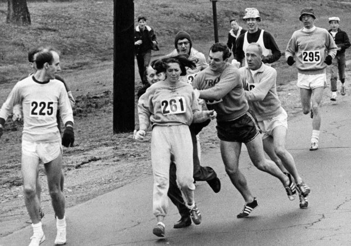
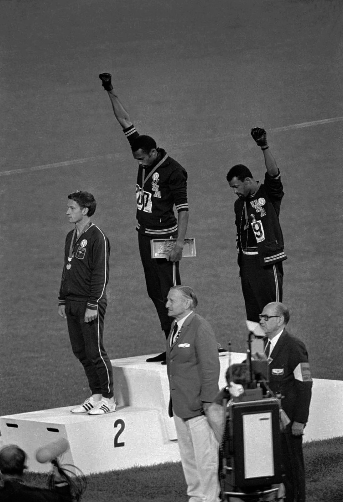
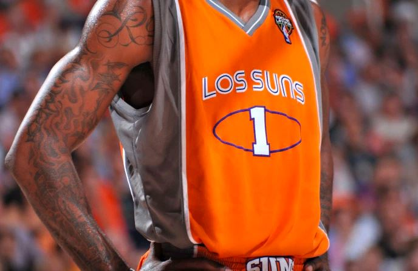

Many people have had to overcome injustics because
of their passion for a sport. These injustices
include but are not limited to racism, sexism and
in recent history civil rights.

the image on the left of the first woman to
run the Boston marathon and officials attempting to remove her
from the course because of her gender.
an example of social justice in the mainstrea...


Some professional basketball teams wore jerseys
during games as a tribute to the growing latino heritage in sports as
well as a response to laws in Arizona at the time that many felt wer
discriminatory against people of Hispanic decent.